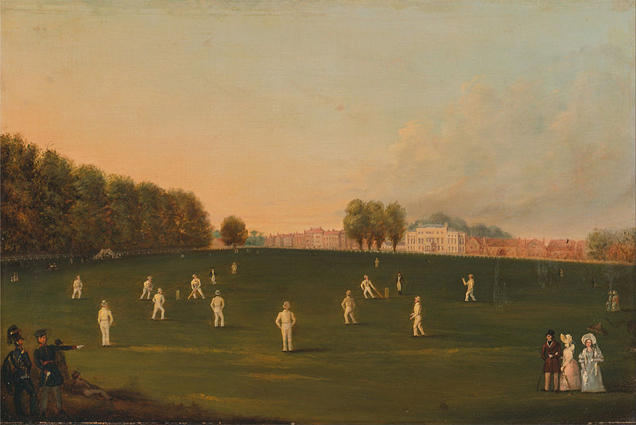
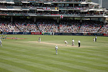

The sport of cricket has a known history beginning in the late 16th century. Having originated in south-east
England,
it became the country's national sport in the 18th century and has developed globally in the 19th and 20th
centuries.International matches have been played since 1844 and Test cricket began, retrospectively
recognised, in 1877. Cricket is the world's second most popular spectator sport after association football.
Governance is by the International Cricket Council (ICC) which has over one hundred countriesand territories
in membership although only twelve play Test cricket.
The game of cricket has a known history spanning from the 16th century to the near day, with international
matches played since 1844, though the official history of international Test cricket began in 1877. During
this time, the game urban from its start in England into a game which is now played competently in most of
the Commonwealth of nation.
Cricket faced its first real calamity during the 18th century when chief matches practically ceased during
the Seven Years War. This was mostly due to shortage of players and lack of venture. But the game survives
and the "Hambledon Era" proper began in the mid-1760s.
Cricket faced another chief disaster at the beginning of the 19th century when a termination of chief
matches occur during the culminate period of the Napoleonic Wars.Again, the causes were lack of players and
lack of investment. But, as in the 1760s, the game survives and a slow revival began in 1815.
A Treacherous Game
It was a treacherous game � the first documented fatal accident related to cricket was in 1624, at Hosted
Green in Sussex. Sadly, Jasper Venal died after being struck by a bat while trying to catch the ball. Its
unclear if this was an accident, or if the batsman simply put too high a price on his wicket.
Cricket matches between village teams are documented before the English Civil War (1642-1651). The game
developed steadily after the war, as town and city teams developed.
The history of cricket also records how the sport first attracted gambling for significant sums of money in
the 18th century. This was an unattractive, though perhaps inevitable development, but did have the benefit
of being the cause for the establishment of the first Laws of Cricket in 1744.
The most famous early club was Hambledon in Hampshire, which became the headquarters of the game for about
30 years until the opening of Lords and the MCC in 1787. The MCC has been the custodian of the Laws of
Cricket ever since then.
English colonialism brought cricket to other parts of the world; to North America in the 17th century, to
the West Indies, India and Australia in the 18th century, and to New Zealand and South Africa in the 19th
Century. The USA played Canada in the first international match in 1844.
The game developed into today�s club, county and international structure through the 20th century. The
International Cricket Conference (ICC) has become the global governing body, while the MCC remains the
custodian of the rules
For more info click below
Link
Cricket is the most popular sport in India by far, and is played almost everywhere.The Indian national cricket
team won the 1983 Cricket World Cup, the 2007 ICC World Twenty20, the 2011 Cricket World Cup, the 2013 ICC
Champions Trophy, and shared the 2002 ICC Champions Trophy with Sri Lanka. 2023 Cricket World Cup would also be
hosted by India.
.jpg) The domestic competitions include the Ranji Trophy, the Duleep Trophy, the Vijay Hazare Trophy, the Deodhar
Trophy, the Irani Trophy and the NKP Salve Challenger Trophy. In addition, the BCCI conducts the Indian Premier
League, a Twenty20 competition, which is also one of the biggest sports league in the world and the biggest
cricket league in the world. The Indian cricket team is also accredited with the honour of winning all the ICC
tournaments under M.S. Dhoni's captaincy, which is a world record. While cricket is by far the most popular
sport in the country it is not the country's national sport since India has no national sport.
The domestic competitions include the Ranji Trophy, the Duleep Trophy, the Vijay Hazare Trophy, the Deodhar
Trophy, the Irani Trophy and the NKP Salve Challenger Trophy. In addition, the BCCI conducts the Indian Premier
League, a Twenty20 competition, which is also one of the biggest sports league in the world and the biggest
cricket league in the world. The Indian cricket team is also accredited with the honour of winning all the ICC
tournaments under M.S. Dhoni's captaincy, which is a world record. While cricket is by far the most popular
sport in the country it is not the country's national sport since India has no national sport.
Cricket is an important part of the culture of India. The Indian team shares a rivalry with the Pakistani team,
and India-Pakistan matches are some of the most anticipated matches, and most watched television broadcasts in
the country.
Link
Cricket is a multi-faceted sport with multiple formats that can effectively be divided into first-class cricket,
limited overs cricket and, historically, single wicket cricket. The highest standard is Test cricket (always
written with a capital "T") which is in effect the international version of first-class cricket and is
restricted to teams representing the twelve countries that are full members of the ICC (see above). Although the
term "Test match" was not coined until much later, Test cricket is deemed to have begun with two matches between
Australia and England in the 1876�77 Australian season; since 1882, most Test series between England and
Australia have been played for a trophy known as The Ashes. The term "first-class", in general usage, is applied
to top-level domestic cricket. Test matches are played over five days and first-class over three to four days;
in all of these matches, the teams are allotted two innings each and the draw is a valid result.

Limited overs cricket is always scheduled for completion in a single day. There are two types: List A which
normally allows fifty overs per team; and Twenty20 in which the teams have twenty overs each. Both of the
limited overs forms are played internationally as Limited Overs Internationals (LOI) and Twenty20 Internationals
(T20I). List A was introduced in England in the 1963 season as a knockout cup contested by the first-class
county clubs. In 1969, a national league competition was established. The concept was gradually introduced to
the other leading cricket countries and the first limited overs international was played in 1971. In 1975, the
first Cricket World Cup took place in England. Twenty20 is a new variant of limited overs itself with the
purpose being to complete the match within about three hours, usually in an evening session. The first Twenty20
World Championship was held in 2007. Limited overs matches cannot be drawn, although a tie is possible and an
unfinished match is a "no result".
Single wicket was popular in the 18th and 19th centuries and its matches were generally considered top-class. In
this form, although each team may have from one to six players, there is only one batsman in at a time and he
must face every delivery bowled while his innings lasts. Single wicket has rarely been played since limited
overs cricket began. Matches tended to have two innings per team like a full first-class one and they could end
in a draw.